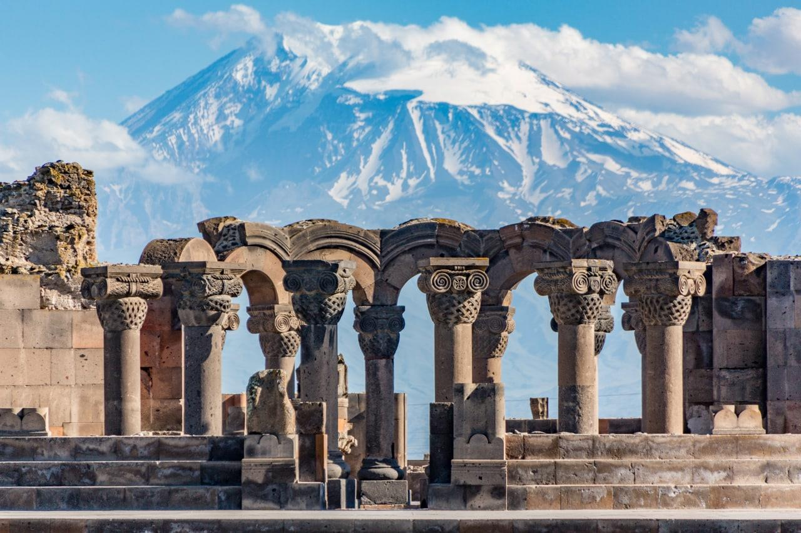

PHOLYCHONG.SV33
Home |
Kazackstan |
Armenia |
Cambodia |
Malaysia |
Indonesia |
Thailand |
Mongolia |
Pakistan |
Nepal |
Bangladesh |
Laos |
Philippin |
Myanmar |
Vietnam |
India |
២. អាមេនី (Armenia)

អាមេនីនៅតែជាប្រទេសមួយដែលមានតម្លៃថោកបំផុតក្នុងការទៅទស្សនានៅអាស៊ី ខណៈប្រទេសនេះក៏នៅមិនទាន់មានភ្ញៀវទៅទស្សនាច្រើននៅឡើយ។ ក្នុងនាមជារដ្ឋមួយក្នុងចំណោមរដ្ឋចំណាស់ជាងគេបំផុតនៅលើពិភពលោក និងជារដ្ឋដំបូងគេដែលទទួលយកសាសនាគ្រិស្តជាសាសនាផ្លូវការរបស់ខ្លួន។ នៅអាមេនី ភាគច្រើនសម្បូរកន្លែងទេសចរណ៍បែបវប្បធម៌ប្រវត្តិសាស្ត្រ ដូចជា អតីតទីក្រុងបុរាណ សារមន្ទីរ សំណង់បុរាណជាដើម។
Next